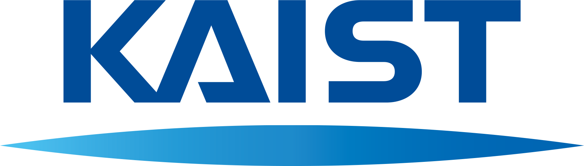
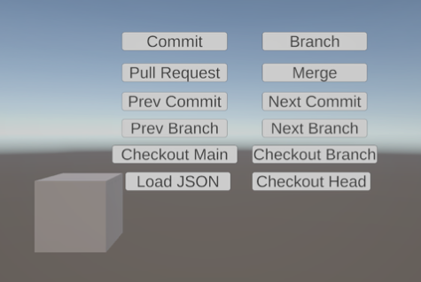
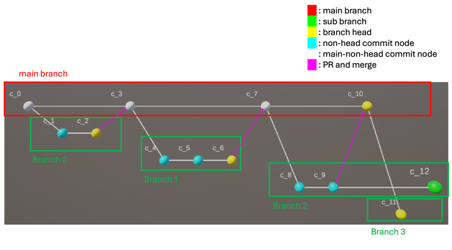
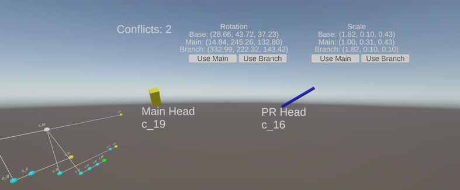

직접 조작 중심
XR 공간에서 이동, 회전, 크기 변경, 색상 변경으로 빠른 아이디어 실험
RealitySketch [2], INTERACT [3]

Object-Level Version-Control Workflows for Object Editing in Collaborative XR Authoring
이승재, 백민주, 우운택 · KAIST · UVR Lab
Motivation
XR 공간에서 이동, 회전, 크기 변경, 색상 변경으로 빠른 아이디어 실험
RealitySketch [2], INTERACT [3]
디자인, 교육, 트레이닝, 콘텐츠 제작에서 같은 객체를 여러 사람이 반복 수정
GenAI Survey [4], ImaginateAR [5]
독립 수정 시 최신 상태와 병합 대상 판단이 어려움
Just Undo It [7], VRGit [8]
Problem Gap
짧은 개인 작업에는 유용하지만, 대안 경로 보존과 사후 병합이 어려움
Just Undo It [7]
동시 상태 공유에는 적합하지만, 비동기 변경안 검토 절차가 약함
Just Undo It [7]
객체 이력 추적, 대안 브랜치 보존, 충돌 비교, 선택 병합 구조 필요
VRGit [8]
Related Work 1
multi-user VR 환경에서 undo 동작과 사용자 기대 탐색
Just Undo It [7]
협업 상황에서 단순 되돌리기가 사회적 의미와 충돌 가능성을 갖는다는 관찰
Undo as collaborative action
undo 중심 복원은 가능하지만, 대안 경로 보존과 pull-request식 사후 검토는 약함
Need: branch + review
본 연구 연결: undo를 넘어 객체 변경 이력, 브랜치, 검토 가능한 통합 흐름으로 확장
Related Work 2
VR 환경에서 버전 이력 탐색과 변경 상태 비교를 지원하는 Git-inspired interaction
VRGit [8]
공간 안에서 version navigation을 수행하고 revision 차이를 이해하는 방식 제안
Spatial version control
객체 단위 PR 생성, 속성별 conflict preview, 선택 병합 workflow는 추가 필요
Need: PR + merge resolution
본 연구 위치: object-level history, PR review, conflict-aware merge workflow의 프로토타입 구현
Idea
System Overview

position, rotation, scale, color, interactable, sensitivity를 객체 상태로 캡처
commit, branch, PR, merge, checkout을 XR 공간에서 실행
commit, branch, PR, conflict 정보를 기기 내부에 저장
Repository Model
repositoryName, activeBranchName, commits, branches, pullRequests 보존
parentCommitId, branchName, object state, changedAttributes 저장
위치, 회전, 크기, 색상 등 저수준 속성 캡처와 재적용
핵심 효과: 전체 scene snapshot보다 가벼움, 사용자가 말할 수 있는 수정 단위와 더 가까움
Commit & Branch

main branch와 sub branch를 공간적으로 분리해 lineage 확인
과거 commit 수정 시 새 branch 자동 생성, 기존 진행 덮어쓰기 방지
Pull Request & Merge
대안 객체 상태 준비
main head와 branch head의 변경 속성 요약
base, main, branch 비교로 충돌 여부 판단
충돌 없음 또는 해결 시 main에 새 commit 생성
Conflict Resolution

두 revision을 side-by-side miniature로 비교, 변경 결과를 공간적으로 확인
Rotation, Scale 등 충돌 속성별 Main 또는 Branch 값 선택
Prototype Implementation
repository 초기화, commit, branch, PR, merge 조정
객체 속성 비교와 base-main-branch 기반 conflict detection 수행
repository_autosave.json을 Application.persistentDataPath에 저장
main head와 PR head를 side-by-side miniature로 시각화
Demo Plan
Contribution
Limitations & Future Work
현재 시스템은 단일 공유 객체 중심. 실제 XR 저작은 여러 객체와 관계가 함께 변화
position, rotation, scale, color 같은 저수준 속성 중심
multi-object history, semantic edit representation, multi-user evaluation으로 확장
Conclusion
object-level versioning, branch-based exploration,
pull request review, conflict-aware merge resolution을
XR 저작 환경 안으로 통합
sjlee_7104@kaist.ac.kr